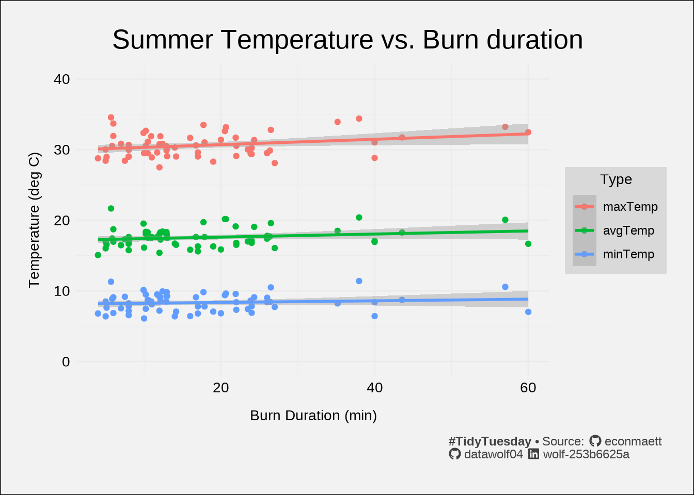

I’m back doing some #TidyTuesday visualizations. This week let’s look at exploding snowmen?!?!?!
The city of Zurich thinks that groundhogs make lousy weather predictors, so they have created the Böögg - Zurich’s infamous exploding snowman! Ok, I admit that Punxatawny Phil is likely the relative newcomer here. Since I’m American, I don’t know what a Böögg is, so I looked it up for others like me.
The Böögg is a snowman effigy made of cotton, wool, and stuffed with fireworks, created every year for Zurich’s “Sechseläuten” spring festival. The saying goes that the quicker the Böögg’s head explodes, the finer the summer will be.
This is a festival similar to Groundhog day in that a non-climactic phenomenon is used to “predict” a climactic event. So, let’s test the idea, does folk wisdom stand its ground against hard science?
Confirmation bias
This, and other nuggets of folk wisdom, often “work” because of a phenomenon known as confirmation bias, that is people overemphasize data that support their belief and neglect data that oppose their belief. Consider the two reactions to a “fine” day:
- Given a short time to Böögg head explosion. Today “proves” that the Böögg is right.
- Given a long time to Böögg head explosion. Given all of the crappy weather we’ve had recently, today just “proves” that the Böögg is sometimes generous and lets us have a break from the awful weather.
More dirty poker
Note, the saying is that the quicker the Böögg’s head explodes, the finer the summer will be. Well, what makes for a fine summer (in the context of Zurich)? Is hotter finer? Surely there is a limit to that, I think that the good people of Zurich would not enjoy 40 degree weather like my friend in Sao Paolo gets routinely during the summer. Is it purely sunshine? What about rainfall? So the beauty of this statement is that you can make it mean whatever you want it to mean.
Summary plot
When looking at groups of numerical data, I like to do a pairs plot. Each cell of the array is one of three types of things:
- A histogram (or kernel density plot) of each measurement on the diagonal
- A scatterplot relating one measurement to a different measurement in the lower left triangle.
- The correlation between the two measurements in the upper right triangle.
This lets me combine all of the data into one master plot.
The largest correlation between duration and the weather measurements is 0.276, indicating a weak (or non-existant) linear relationship between the two variables. One thing that I notice is that the temperature data doesn’t really vary that much. I’ll make a plot that focuses on temperatures

I will note that the slopes are all pretty small. Indeed all of the fit lines appear to be very nearly horizontal. And nearly all of the data points lie outside of the shaded region marking the statistical uncertainty of the fit. According to this model, it would seem that burn duration has little influence on temperature – or at the very least, the fit does not to predict anything quantitatively meaningful. Based on the table below, the “slope” is not significantly different from zero with 99.9% confidence.
| Temperature vs duration linear fit coefficients | ||||
| Value | Error | t | P(>|t|) | |
|---|---|---|---|---|
| (Intercept) | 29.943 | 0.311 | 96.279 | <0.001 |
| duration | 0.038 | 0.015 | 2.602 | 0.010 |
| tempTypeavgTemp | −12.760 | 0.440 | −29.012 | <0.001 |
| tempTypeminTemp | −21.810 | 0.440 | −49.588 | <0.001 |
| duration:tempTypeavgTemp | −0.016 | 0.021 | −0.790 | 0.430 |
| duration:tempTypeminTemp | −0.027 | 0.021 | −1.279 | 0.202 |
| #TidyTuesday • Note that the slope is so small that a change in duration of 10 minutes changes the prediction of temperature by less than 0.5 degree. | ||||
Conclusion
As expected by everyone, folk wisdom/old wives tales don’t withstand the scrutiny placed on them when analyzed using statistical methods. But does that make them any less fun? I’ll leave that up to you. Now, I feel an incredible urge to make snow explode.